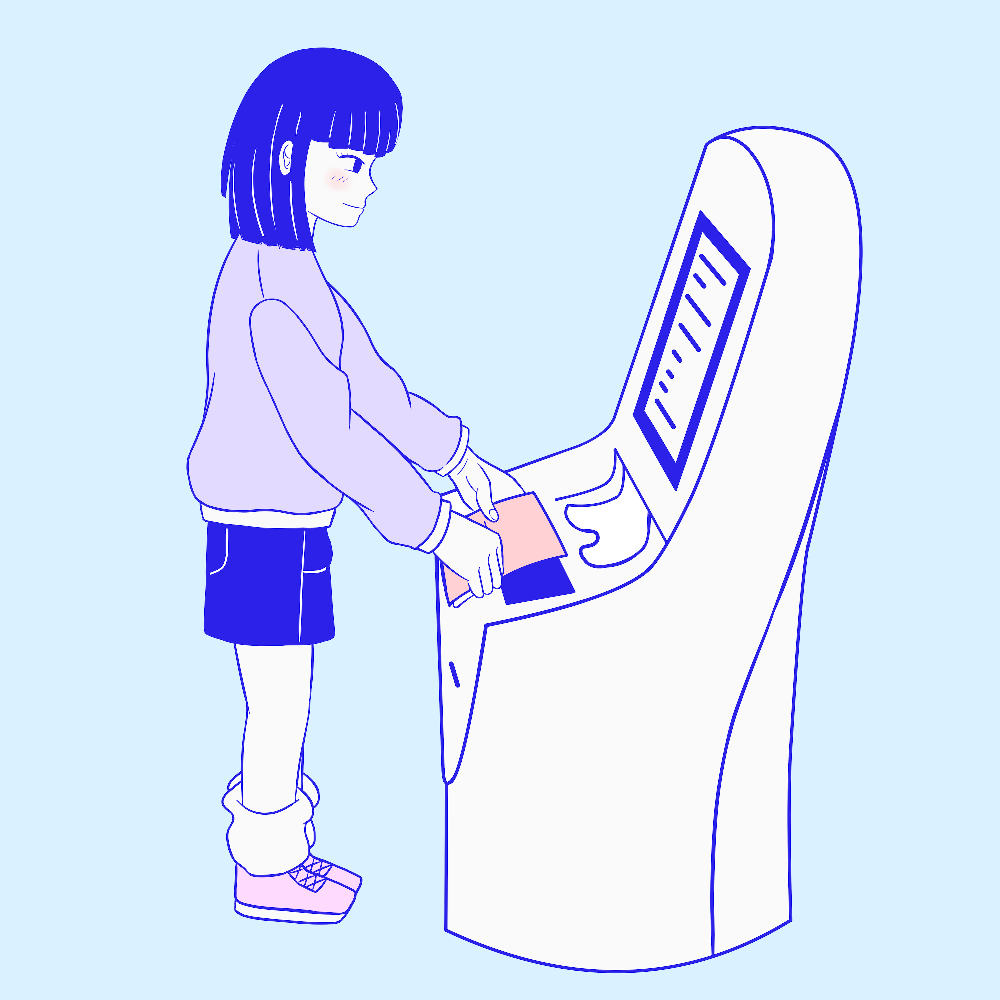
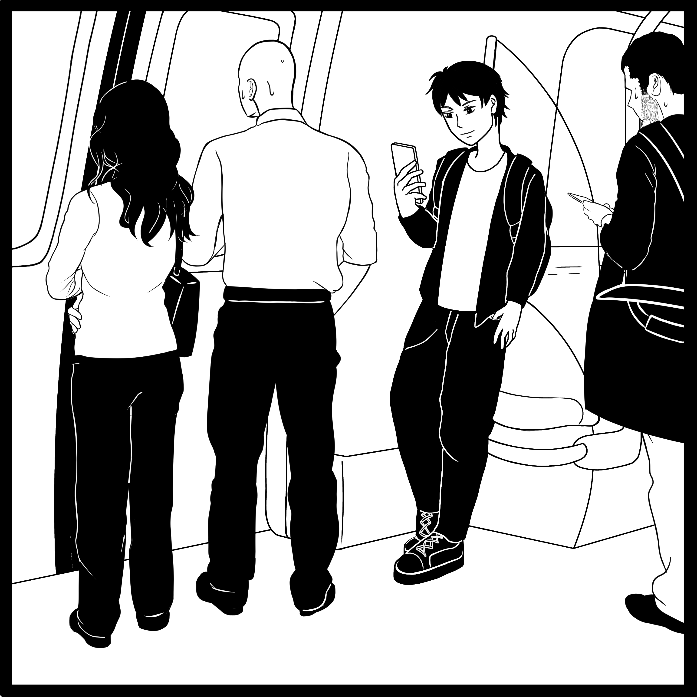

Creating survey illustrations for airport user experience
Internship Overview
The project that my team was involved in was on the airport user experience.
An idea was proposed to improve the airport experience, and surveys were to be conducted to inquire about
the views of several target groups on this idea. These target groups included the passengers and airport
staff.
Note: While I cannot disclose the full details of the project,
I can provide the general outline and share my amazing experience. Thank you for reading!
Wacom Tablet, iPad Clip Studio Paint, ibispaint, Filmora
Work Flow
Style Exploration
My internship started off with trying to find a suitable style for the survey illustrations.
The priority was to choose a style which could deliver the message most effectively, thereby
helping the survey participants to understand their options at one glance. Some of the styles
explored include one slightly resembling that of Japanese animations, as well as pop art.

There was also a chance that at the later part of the internship, a tutorial video
would be necessary to walk users through the steps of a particular process, i.e. the proposed idea.
Hence, during the exploratory phase, I was also tasked to create a simple animation tutorial on the self
check-in process. This was to provide an idea of how long it would take to produce an animation of a certain
quality.
Survey Illustrations
During the exploratory phase, we found that the black-and-white style was the most suitable for the survey,
since it involves putting two illustrations side by side for users to compare between the options. As such,
colors would have been a form of distraction.

Note: These two images are not for comparison.
Conducting Mock Interviews
In the second half of the internship, our team conducted mock interviews with the
cleaning staff at SUTD. Our plan was to gain an insight of the interview process as well as
refine the survey questions before conducting the survey with the cleaning staff at Changi Airport.
The mock interview was conducted with a total of four cleaning staff. Since one of the staff
was a Chinese speaker, we were also required to do a Chinese translation for the survey questions.
This interview was a challenge in multiple ways, partly due to the fact that it was a group interview and it
was hard to keep everyone engaged when it was another participant's time to share. It was also important to
connect with the participants and help them feel at ease, so that they would be comfortable to share beyond what
the question required. This is because oftentimes, the additional information that the
participants share is what gives us a more
accurate understanding of their views and lifestyle.
Covid Restrictions
Due to the restrictions put in place during the pandemic, I worked from home entirely for the 4 months,
with the exception of only one day to conduct the mock survey. As such, it was
a regret that I was unable to bond with my fellow colleagues who worked together with me on this project.
The project timeline was also delayed significantly due to the Covid restrictions, hence we were unable
to conduct the survey with the cleaning staff at Changi Airport. While it
was a pity, I was glad to have been able to participate in the mock user interview and gain some experience
with it!
My initial job scope also included data analytics, on top of working on the survey illustrations.
Since the interviews could not be completed in time before my internship ended, I did not have a chance
to perform data analysis. However, I learnt about the various methods of filtering, grouping and presenting
the data during the mock interviews.
Reflection
It has always been my dream to work as an illustrator, hence this internship opportunity was
a blessing. Being able to use my passion to serve a purpose was not only meaningful but also fulfilling!
From coming up with illustration designs to conducting user interviews, I learnt a lot in various areas.
One of the lessons learnt is to think from the users' perspective since they were the ones viewing the illustrations,
and also good interview techniques to obtain the desirable results!
My kind colleagues have made my internship experience an extremely enjoyable one. They were always quick to
share any tips and materials to ease my adaptation process, and even when pointing out areas of improvement,
they always made sure to use gentle words. It touched my heart that my teammates were so caring and supportive!